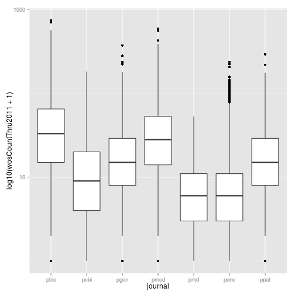
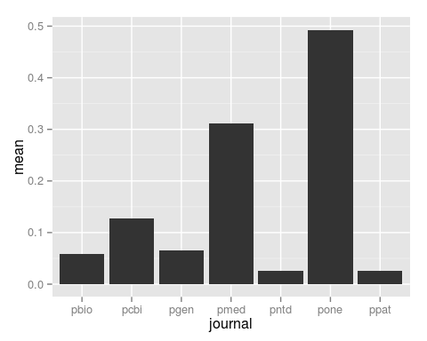
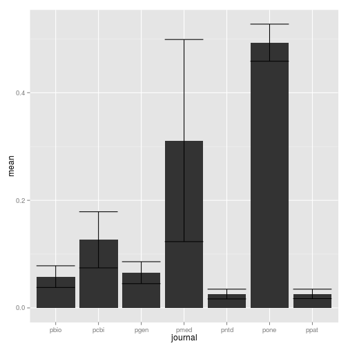
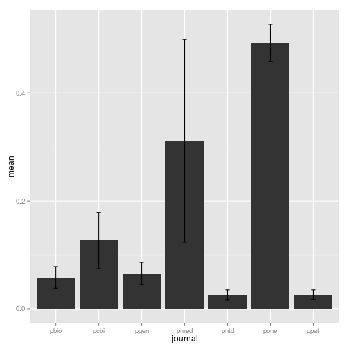
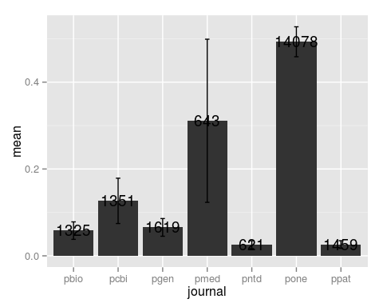
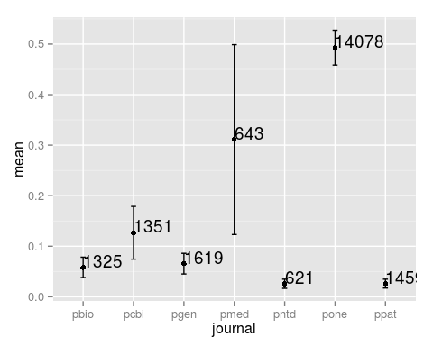

Intermediate programming with R
Creating different plots with geoms
Learning Objectives
- Map a categorical (discrete) variable to an axis
- Create a boxplot and barplot
- Add error bars and text annotations
To this point we have mainly focused on a scatter plot created using geom_point. ggplot2 offers many different geoms to create a wide variety of plots. In this lesson, we’ll explore a few more geoms.
Mapping categorical (discrete) variables
The scatter plot we made mapped continuous variables to the x and y axes.
p <- ggplot(research, aes(x = log10(pdfDownloadsCount + 1), y = log10(wosCountThru2011 + 1))) +
geom_point(aes(color = journal)) +
geom_smooth() +
scale_x_continuous(breaks = c(1, 3), labels = c(10, 1000)) +
scale_y_continuous(breaks = c(1, 3), labels = c(10, 1000))
pgeom_smooth: method="auto" and size of largest group is >=1000, so using gam with formula: y ~ s(x, bs = "cs"). Use 'method = x' to change the smoothing method.

Of course we can also map categorical (also known as discrete) variables.
p_box <- ggplot(research, aes(x = journal, y = log10(wosCountThru2011 + 1))) +
geom_boxplot() +
scale_y_continuous(breaks = c(1, 3), labels = c(10, 1000))
p_box
Creating a barplot
A common figure in scientific publications is the barplot, where the height of the bars represent the mean and the error bars represent the standard error of the mean (SEM). Recall from the challenge in the dplyr section that we calculated the mean and SEM for the number of article tweets per journal.
tweets_per_journal <- research %>%
group_by(journal) %>%
summarize(num = n(),
mean = mean(backtweetsCount),
sem = sd(backtweetsCount) / sqrt(num))
tweets_per_journalSource: local data frame [7 x 4]
journal num mean sem
1 pbio 1325 0.05811321 0.020153395
2 pcbi 1351 0.12657291 0.052177184
3 pgen 1619 0.06547251 0.020408525
4 pmed 643 0.31104199 0.187868371
5 pntd 621 0.02576490 0.009057697
6 pone 14078 0.49303878 0.034484187
7 ppat 1459 0.02604524 0.008807428
Let’s create a barplot to display this result using geom_bar.
tweets_bar <- ggplot(tweets_per_journal, aes(x = journal, y = mean)) +
geom_bar(stat = "identity")
tweets_bar
We have to set the argument stat = "identity" because by default geom_bar tabulates the number of occurrences of the variable mapped to x and maps this frequency to y.
Now let’s add the error bars using geom_errorbar. We pass it values for ymin and ymax, which define the range of the error bars.
tweets_bar <- ggplot(tweets_per_journal, aes(x = journal, y = mean)) +
geom_bar(stat = "identity") +
geom_errorbar(aes(ymin = mean - sem, ymax = mean + sem))
tweets_bar
By default the error bars are as wide as the bars. Let’s reduce their size using the argument width.
tweets_bar <- ggplot(tweets_per_journal, aes(x = journal, y = mean)) +
geom_bar(stat = "identity") +
geom_errorbar(aes(ymin = mean - sem, ymax = mean + sem), width = 0.1)
tweets_bar
Since we also calculated the sample size per journal, let’s add the number of articles to the plot using geom_text.
tweets_bar <- ggplot(tweets_per_journal, aes(x = journal, y = mean)) +
geom_bar(stat = "identity") +
geom_errorbar(aes(ymin = mean - sem, ymax = mean + sem), width = 0.1) +
geom_text(aes(label = num))
tweets_bar
These are difficult to read because the text boxes are centered on the coordinate that marks the top of each bar. The positioning of the text box is controlled by the arguments hjust and vjust, for horizontal and vertical justification. By default these are both set to 0.5. We can image the text box being defined from 0 to 1 from left to right for hjust and from 0 to 1 from bottom to top for vjust. The values we set for hjust and vjust adjust where the text box is situated relative to that coordinate at the top of each bar. We’ll set them both to 0 to place the bottom left corner of the text box at that point, and thus the text is above and to the right of the bar.
tweets_bar <- ggplot(tweets_per_journal, aes(x = journal, y = mean)) +
geom_bar(stat = "identity") +
geom_errorbar(aes(ymin = mean - sem, ymax = mean + sem), width = 0.1) +
geom_text(aes(label = num), hjust = 0, vjust = 0)
tweets_barTo make it easier to see this central point, and to show an alternative to a boxplot, we can easily switch from a barplot to using points.
tweets_point <- ggplot(tweets_per_journal, aes(x = journal, y = mean)) +
geom_point() +
geom_errorbar(aes(ymin = mean - sem, ymax = mean + sem), width = 0.1) +
geom_text(aes(label = num), hjust = 0, vjust = 0)
tweets_point
Using multiple geoms, we were able to created a plot with multiple layers to display multiple sources of information, the mean, SEM, and sample size.
Challenges
Mean number of tweets per journal per year
Modify the dplyr code above to calculate the mean, SEM, and sample size of the number of article tweets per journal and per year. Use facet_wrap to make a separate subplot per year.
Visualizing a single distribution
The geoms geom_histogram and geom_density can be used to create histograms and density plots, respectively. Using these geoms, visualize the distribution of 2011 citations (wosCountThru2011). Compare the raw distribution to log10 and square root transformations.